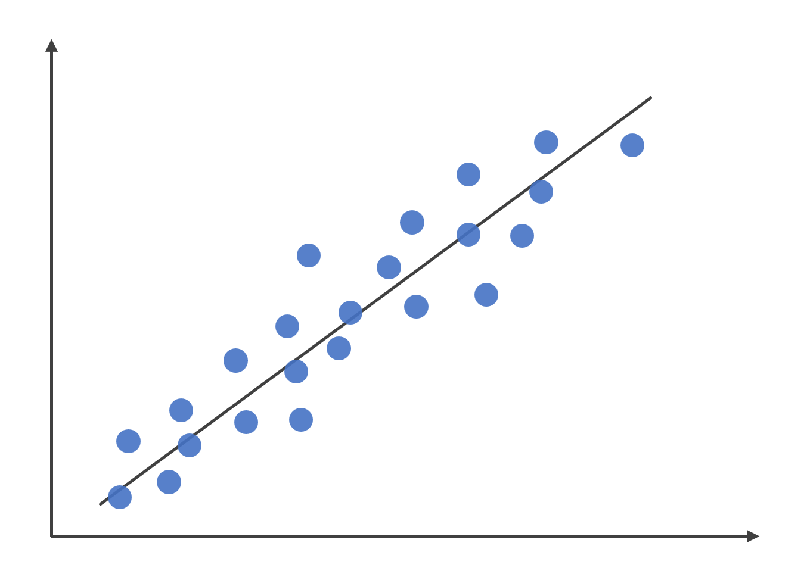

Linear Regression
| Category | Machine Learning |
|---|---|
| References | References |
| Created | July 07, 2023 |
什麼是線性迴歸？
線性迴歸（Linear Regression）是一種監督式學習的演算法，用於解決迴歸問題，它與羅吉斯迴歸的概念相似，它會假設自變量（特徵）和因變量（目標）之間存在線性關係。

\[y= \beta _{0} + \beta_ {1} X_{1} + \beta _{2} X_{2} + \cdots + \beta _{n} X_{n} + \varepsilon \]
| 變數名稱 | 變數意義 |
|---|---|
| $y$ | 代表因變量，也就是目標 |
| $X_{n}$ | 代表自變量，也就是特徵 |
| $\beta _{n}$ | 代表模型的參數 |
| $\varepsilon$ | 代表誤差值 |
線性迴歸的求解方法
閉式解
閉式解（Closed-form）是一種直接求解線性模型參數的方法，較適合在特徵少時使用，通常使用最小平方法（Least Square Method），這種方法可以直接得到模型的最佳參數值，其他常見的閉式解算法包括正規方程（Normal Equation）和奇異值分解（Singular Value Decomposition）等。
梯度下降
梯度下降（Gradient Descent）是一種迭代優化算法，通過不斷調整模型參數的值，以最小化損失函數（Loss Function），梯度下降較適合在特徵維度較高時使用，它基於對目標函數的梯度（導數）進行反向求解，以找到使損失函數值最小化的參數組合，常見的種類有批量梯度下降（Batch Gradient Descent）、隨機梯度下降（Stochastic Gradient Descent）和小批量梯度下降（Mini-batch Gradient Descent）等。
線性迴歸的優缺點
- 簡單而直觀：線性迴歸是一種簡單且易於理解的方法，因為它基於線性關係的假設，所以易於實現並且提供直觀的結果。
- 可解釋性：線性迴歸模型的係數可以提供變量之間的關係和影響程度的解釋，這使得線性迴歸成為解釋性較強的預測模型之一。
- 計算效率高：相較於複雜的演算法，線性迴歸的計算效率相對較高，對於大型資料集，線性迴歸的訓練和預測速度通常較快。
優點：
- 線性假設：線性迴歸是會假設自變量和因變量之間存在線性關係，所以當資料具有非線性關係時，線性迴歸可能受到限制，無法捕捉到複雜的關係。
- 受異常值影響：線性迴歸對於異常值比較敏感，當資料中存在極端值時，這些值可能會對線性迴歸模型的擬合造成影響，導致結果不準確。
- 前提假設：線性迴歸模型依賴於許多前提假設，例如：線性關係、常態分佈的誤差項、變量之間的獨立性…等，如果這些假設不成立，則迴歸模型的結果可能不可靠。
缺點：